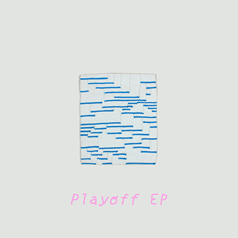

LA003


Stevhen Peters - Playoff EP
//////////"Stevhen Peters experimental electronic music is very much polished. With cotton candy loops and warbling vocoder, his sound is something akin to Air but through a cracked lens of the American millennial" - Noise & Color PDX
\\\\\\\\\\"his own brew of electronic and hymnal, hovering somewhere in the “experimental” end of the spectrum for it’s uncanny delivery. His visual counterpart would likely fit in the taxonomy of “abstract” for his spattering of beats that know no conventional trajectory--a Pollock of off-beaten indie" - Thrd Coast
//////////